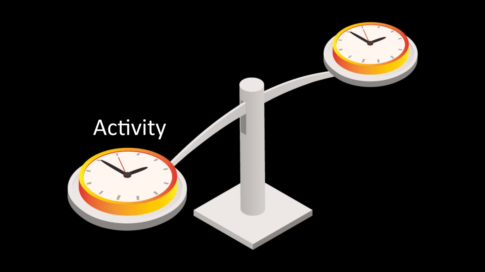

Timing Analysis Attacks
These are the attacks that risk the most security.
Essentially, timing attacks are attacks that can be created with a wide variety of scenarios, the ones that most security risk. The main purpose of timing attacks is to determine the correlation between the activity performed and the time when the person accesses the Tor network.

For example, in 2013, Harvard student made bomb threats to avoid exam. This bomb-hoaxing was sent over the Tor network, after a certain period of time, using an e-mail service that self-destructed. However, despite all these security measures, the person making the hoaxing was caught. The main reason for his catch was that he sent the e-mail over the campus Wi-Fi network. The research team checked to see if anyone had accessed Tor through the local wireless networks. After all, there was only one person using the Tor network on campus, and it turned out that it was that person who sent the message. This is a fairly simple mistake of carelessness, but basically, the real identities of people can be revealed through such time matches.
Apart from this, if the observer has a high number of servers on the Tor network, it can identify the persons by analyzing the incoming and outgoing data in a similar way. However, as there will be a large number of Tor users online at any given moment, such a correlation would require extensive and long-term statistical analysis, making it almost impossible to get definitive conclusions. However, of course we have no way of knowing the potential resource available to the various organizations that have virtually unlimited power and truly global reach. So in theory, if the observer allocates enough resources for the target, there is always a possibility that the target might violate the anonymity and privacy.
In addition, apart from these two attacks, many inattentions that a person can make can directly reveal the identity of the person. However, if technical attacks other than inattentions are of interest to you, you can also take a look at the known attacks on the Tor network from the list in this lecture resource.
Types of attacks from the past to the present.
Source: Attacks on Tor
If you are not going to participate as a developer to actively contribute to the Tor project, the details of technical attacks are unnecessary for a normal user. Tor developers are responsible for resolving technical attacks. However, you can of course take a look at the attacks on the list in order to have general information.
How can we be protected?
While there is no direct way to protect yourself from timing attacks, keeping your personal activities under control can provide security. You need to act by taking all these parameters into account, including the internet you are connected to, your location, the computer you use, and whatever can be associated with you in real life. In short, you should be able to keep all the factors required for operational security called "OPSEC" under your control at all times.